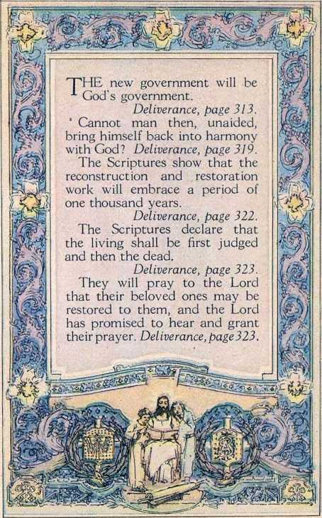
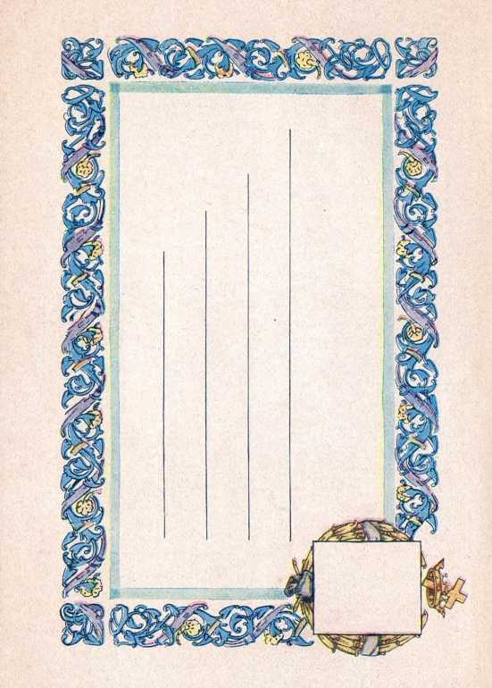

1 reconstruction and blessing. Deliverance, page 293. Long ago God prepared certain men who under adverse conditions proved their loyalty. Deliverance, page 297.
Between Abel and the cross there were a few men on the earth who believed God.
Deliverance, page 299.
None of those has gone to heaven. Deliverance, page 303.
■What law will govern the people during the reign of Messiah? Deliverance, page312.

TTHERE is no doctrine 1 that is more clearly taught in the Bible than that of the resurrection of the dead.
Deliverance, page 325.
The ransom sacrifice was given for all.
Deliverance, page 326.
The Lord will not force any one to accept the truth; but he will compel all to obey the truth when they hear it.
Deliverance, page 331.
Therefore the healing of the sick, the opening of the eyes of the blind, but foreshadowed the greater work that Jesus Christ will do.
Deliverance, page 337.

I,
.Next Reading Assignment!
! Pages 29110318
' Following Week «
Pages 319 to 344 17
TT IS a fixed rule of God’s plan 1 that he will grant eternal life to no one without such a one proving his loyalty and faithfulness under the test. At the end of the thousand years Satan is to be turned loose that he may try the people. Deliverance, page 339.
“And God shall wipe away all tears from their eyes; and there shall be no more death, neither sorrow, nor crying, neither shall there be any more pain.”—Revelation 21:4. Deliverance, page 341.
“DELIVERANCE IS COMPLETE; PRAISE GOD!"
Deliverance, Page 344.
